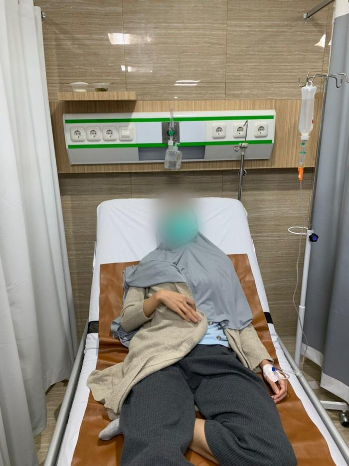
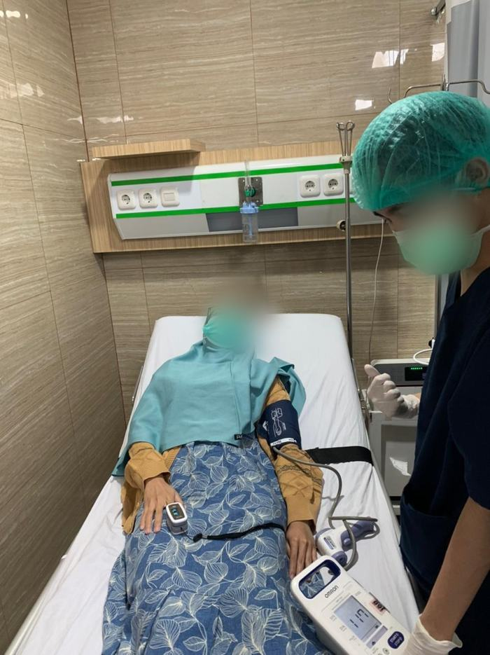
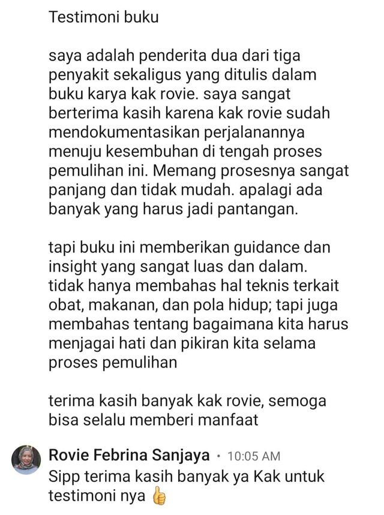

Ini pertanyaan yang menghantuiku selama berbulan-bulan — sampai aku akhirnya tahu jawabannya, dan jawabannya bukan obat baru.
Berat badanku turun 11 kg. Aku takut makan, karena tiap salah suapan gejalanya langsung balik. Dan tiap kali obat habis, semuanya kembali — bukan seperti semula, tapi lebih parah dari sebelumnya.


Ini perjalananku sendiri, Agustus–November 2021. Bukan cerita orang lain.
Dokter yang sama sejak pertama aku didiagnosis GERD. Aku pikir akan membaik seperti biasanya. Kali ini tidak. Diare tidak berhenti, nyeri lambung makin menjadi.
Aku jelaskan semuanya: diare berkepanjangan, nyeri lambung, napas pendek-pendek yang tidak membaik walau sudah minum omeprazole. Tidak ada pemeriksaan lanjutan. Obat cuma diganti dari omeprazole ke lansoprazole, ditambah obat racikan.
Padahal sebelumnya selalu normal. Aku disarankan endoskopi dan dirujuk lagi ke spesialis gastro. Obat yang diberikan: Mucosta 100 mg. Di titik ini aku mulai cemas berat.
Cuma itu penjelasan yang aku terima, tanpa keterangan lebih lanjut, dan tidak banyak ruang untuk bertanya. Aku pulang tanpa benar-benar paham apa yang sedang terjadi di tubuhku.
Kontrol seminggu kemudian, diresepkan Salofalk. Obat habis, tidak ada perubahan. Sebelum jadwal kontrol berikutnya, aku sudah balik lagi ke IGD — dan di sana diberi obat yang kurang lebih sama.
Dulu aku pikir ini cuma perasaanku. Ternyata ada penjelasannya — dan begitu aku paham, semuanya masuk akal.
Ini bukan karanganku. Fenomena ini punya nama: rebound acid hypersecretion — lonjakan produksi asam setelah obat penekan asam dihentikan. Yang bikin mengejutkan, ini bahkan terjadi pada orang sehat yang sebelumnya tidak punya keluhan lambung sama sekali, setelah beberapa minggu pemakaian lalu dihentikan.
Ditambah lagi: obat golongan ini dirancang untuk pemakaian jangka pendek. Tapi banyak dari kita memakainya berbulan-bulan, bahkan bertahun-tahun — dan efek jangka panjangnya jarang dijelaskan di ruang praktik yang cuma 7 menit.
Terdokumentasi dalam literatur gastroenterologi. Ebook ini membahasnya lebih lengkap di Bab 3.
Seorang sahabat kuliah mengenalkanku pada naturopati dan pendekatan functional medicine. Awalnya aku ragu. Tapi setelah berbulan-bulan melelahkan, aku mulai serius membacanya — dan untuk pertama kalinya, penjelasannya nyambung dengan apa yang aku alami.
Bedanya satu hal: fokusnya bukan meredakan gejala, tapi mencari akar masalahnya.
Formulir kesehatannya sangat detail — pola hidup, kebiasaan makan, riwayat penyakit, obat-obatan, hasil pemeriksaan, sampai kondisi sehari-hari. Baru di situ aku merasa tubuhku dilihat secara utuh.
Namanya gut-brain connection. Waktu lambung dan ususku memburuk, anxiety dan serangan panik ikut datang. Dan waktu ususku mulai tenang, cemasnya perlahan ikut mereda.
Tubuh yang sedang meradang jadi jauh lebih sensitif pada makanan tertentu. Ada yang membantu pemulihan, ada yang diam-diam memperpanjangnya.
Ini yang paling mengubah cara pikirku. Tubuh butuh asam lambung untuk mencerna. Menekannya terus-menerus justru bikin pencernaanku makin lemah — dan GERD-ku makin parah.
Ini pelajaran paling mahal yang aku dapat — dan sayangnya baru aku tahu setelah sempat salah langkah sendiri.
Waktu itu aku menyalin apa yang aku baca di internet. Kelihatannya masuk akal, banyak yang merekomendasikan, dan katanya berhasil untuk banyak orang. Tapi tubuhku justru bereaksi sebaliknya.
Belakangan aku baru paham kenapa: kondisiku waktu itu belum siap menerimanya. Suplemennya tidak salah — waktunya yang salah. Dan di kondisi lambung yang sedang meradang, salah waktu bukan cuma tidak membantu, tapi bisa memperpanjang penderitaannya.
Di sinilah banyak orang tersesat: mengikuti protokol orang lain yang kondisinya berbeda, di tahap yang berbeda — lalu heran kenapa malah tambah kacau, dan menyimpulkan "berarti cara ini nggak cocok buat aku."
GERD, gastritis, dan radang usus sering datang bersamaan — dan gejalanya saling tumpang tindih sampai sulit dibedakan. Dulu aku mengira semuanya "sakit lambung" yang sama.
Ternyata tidak. Ketiganya butuh prioritas pemulihan yang berbeda. Yang menenangkan satu kondisi, belum tentu cocok untuk yang lain — bahkan bisa berlawanan.
Di ebook ini aku jelaskan cara membedakan ketiganya — gejala khas masing-masing, dan fokus pemulihan yang sesuai untuk tiap kondisi. Supaya kamu tidak salah arah sejak langkah pertama, lalu membuang waktu berbulan-bulan seperti yang aku alami.
Ditulis seperti aku bercerita ke teman — bukan seperti buku teks. Ringkas tapi padat, dibuat supaya tuntas dibaca.
Bagaimana semuanya dimulai — dan tanda-tanda awal yang dulu aku abaikan.
4 dokter, 3 rumah sakit, obat berganti-ganti. Apa yang terjadi, dan apa yang terlewat.
Naturopati & functional medicine, poros usus–otak, dan kenapa asam lambung bukan musuh.
Daftar yang aku pakai sendiri, plus bonus mini cookbook 10 resep sup & kaldu sederhana.
Bab paling tebal. Cara membedakan ketiga kondisi, prioritas pemulihan untuk masing-masing, protokol lengkap yang aku jalani sendiri — sampai jadwal minumnya jam berapa dan mana yang tidak boleh dibarengkan.
Kenapa cemas dan lambung saling memperparah, dan bagaimana aku menata stres & tidur.
Hidup yang dulu tidak pernah berani aku bayangkan — dan seberapa lama sebenarnya prosesnya.
Ini pertanyaan yang paling sering masuk ke DM-ku. Dan wajar — begitu tahu apa yang dibutuhkan, muncul masalah berikutnya: produk di pasaran banyak sekali, kualitasnya jauh berbeda, dan salah pilih artinya buang uang di saat kondisimu sedang tidak memungkinkan untuk coba-coba.
Panduan Memilih Suplemen & Toko Tepercaya berisi:
Bisa diambil terpisah, tapi paling masuk akal digabung dengan ebook utamanya — karena ebook menjelaskan apa dan kenapa, panduan ini menjawab belinya di mana.
Dari Jakarta, Bandung, Medan, Makassar, Ternate, sampai Sintang — mereka yang dulunya selelah kamu, sekarang mulai menata pemulihannya.

"Terima kasih sudah membuat ebook ini. Ini bisa jadi jalan untuk kesulitan seseorang. Aku sudah baca ebooknya, dan sekarang mulai mencoba functional medicine.."
Terima kasih banyak atas kata-katamu 🤍 Senang banget dengar ebook ini membantu. Semangat terus di perjalanan pemulihanmu — kamu pasti bisa 😊
Testimoni nyata dari pembaca via Instagram @dailyresource.id. Identitas disamarkan demi privasi mereka.
Harganya kurang dari sekali ongkos bolak-balik ke IGD. Kalau kamu sudah keluar banyak untuk berobat dan suplemen coba-coba, ini langkah paling murah untuk mulai memahami akarnya.
Begitu pembayaran masuk, PDF otomatis dikirim ke emailmu. Nggak perlu nunggu, nggak ada ongkir.
Ada bagian yang bikin bingung? Chat langsung — aku baca & balas sendiri, sama seperti di Instagram.
Kalau ada kendala apa pun, dibantu sampai kamu benar-benar terima filenya.
Aku menulis ini karena aku pernah di titik itu — dan waktu itu, aku ingin sekali ada yang menjelaskan semuanya dari awal.
Mulai dari Rp79.000 →Penting untuk dibaca. Konten ini adalah pengalaman pribadi dan materi edukasi — bukan nasihat medis, bukan diagnosis, dan bukan pengganti pemeriksaan dokter. Setiap orang berbeda, dan tidak ada hasil yang dijanjikan.
Jangan menghentikan atau mengubah obat yang diresepkan untukmu berdasarkan isi ebook ini. Menghentikan obat penekan asam secara mendadak dapat memicu lonjakan gejala, dan pada sebagian kondisi berbahaya. Konsultasikan setiap perubahan dengan tenaga kesehatan yang memeriksamu.
Suplemen bersifat pelengkap nutrisi, bukan obat, dan tidak menggantikan terapi medis. Kalau kamu sedang hamil, menyusui, punya penyakit penyerta, atau sedang mengonsumsi obat rutin, bicarakan dulu dengan dokter.
Nareswari · @dailyresource.id · Produk digital (PDF), dikirim otomatis ke email.